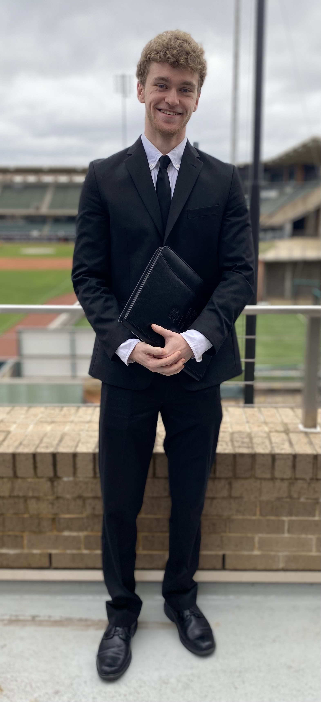

Education:
Texas A&M University - College Station, TX
B.S Computer Science Class of 2022
GPA: 3.67/4.0 Scale
Coursework:
Data Structures and Algorithms, Discrete Structures in Computing, Programming Languages, Intro Program Design Concept, Engineering Graphics
Organization Involved:
- Aggie Coding Club - (Joined "First Website" Project in Fall 2020)
Looking to get more involved with more projects in the coming semesters
- Google Developer Student Club

Hello, my name is Shane Brown and I am studying Computer Science at Texas A&M. I grew up in Katy, TX and I am currently a junior.
I am an outgoing and active person and I love to learn new things. In my free time,
I enjoy playing basketball (or any sports really), going to the gym, and hanging out with friends and family.
I also love mystery, challenges, and mind puzzles.
Computer Science has been something I have been interested in since high school. I took my first Computer Science course my sophomore year by mistake (only elective I could take
aside from child developement) and it ended up being one of the best experiences and ultimately made me pursue Computer Science. I enjoy the instant satisfaction
when my code works and when I successfully make a project. I also enjoy the instatant feedback coding provides when something is not right (I like problem-solving).
I would like to pursue more software related career paths as I have a passion for programming. Although I do not
have a lot of experience regarding internships, I believe I could easily adapt and provide very beneficial work to
a company. I would like to make a difference in the world with the work I do. Life is too short to not enjoy every second and to not challenge yourself.